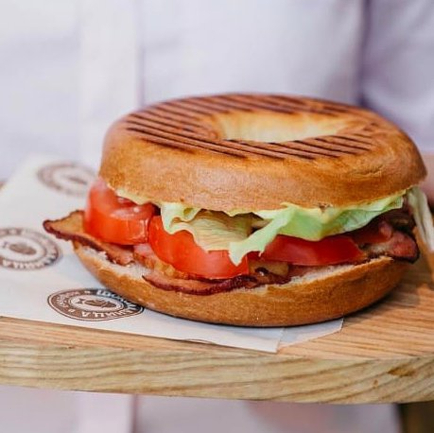
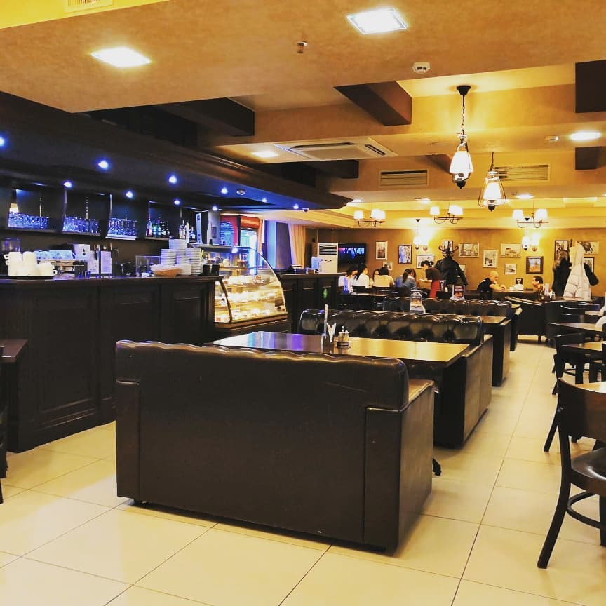

Одно из лучших ресторанов Города
Разнообразно меню
Отличное обслуживание
О компании
На сегодняшний день сеть кофеен «Шоколадница» – одна из крупнейших и самых динамично развивающихся компаний в сфере ресторанного бизнеса в Москве, регионах России и странах СНГ.
С 2008 года сеть активно развивает программу франчайзинга. География франчайзинга «Шоколадницы» охватывает не только крупнейшие города России, но и страны СНГ, также компания ведёт переговоры и поиск партнёров в странах дальнего зарубежья.
Отличительная особенность каждой из наших кофеен – изысканный и уютный дизайн интерьера, теплая и неповторимая атмосфера. В доступном для Гостей обзоре всегда расположена специальная витрина, где можно сразу выбрать понравившийся десерт и лично пообщаться с бариста – специалистом по приготовлению кофе.
Ассортимент «Шоколадницы» весьма разнообразен и способен удовлетворить любой, даже самый изысканный вкус! Наряду с прекрасным кофе, сваренным из свежеобжаренных зерен, элитными сортами чая, соками и коктейлями наша сеть славится своими тортами и изысканными десертами.
Мы ежегодно получаем признание наших Гостей и экспертов ресторанного бизнеса: пять лет подряд с 2004 года «Шоколадница» побеждала в номинации «Лучшая кофейня» премии «Лучший ресторан Москвы» портала menu.ru, в 2011 портал признал «Шоколадницу» лучшим сетевым рестораном, в 2010 году компания стала любимым брендом Россиян в ежегодном рейтинге, «Самой динамичной развивающейся сетью» мы стали по версии magazan.ru в 2011 году, в 2012 yell.ru наградил «Шоколадницу» премией «Лучший бизнес-завтрак». И это лишь часть наших наград!
